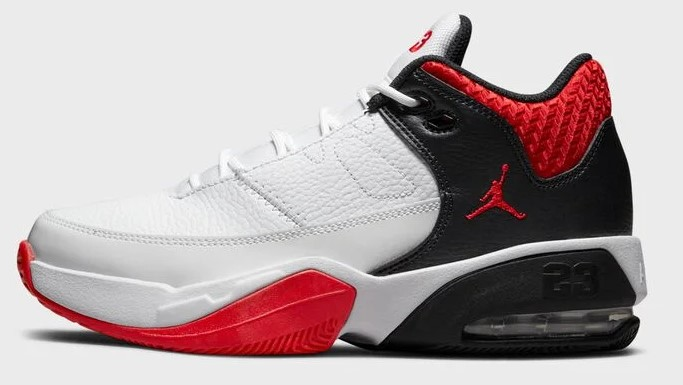
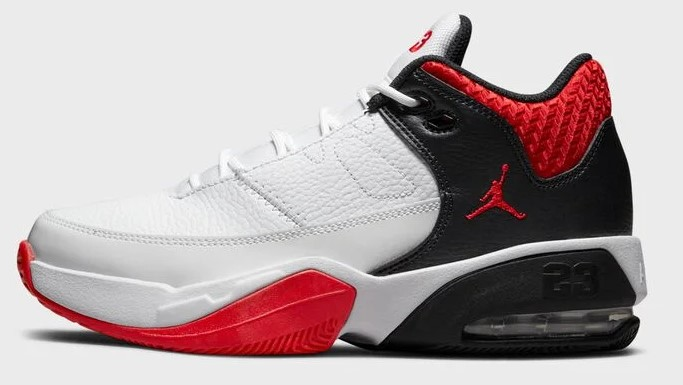

El Air Force es una gama de calzado deportivo fabricado por Nike que comenzó con el Air Force 1 y pasó a incluir el Air Force 2, Air Force 3,
Air Force STS, Air Force 5, Air Force XXV y Air Force 09. El Air Force 1 fue creado por el diseñador Bruce Kilgore y fue el primer calzado de baloncesto en utilizar la tecnología Nike Air.
Los zapatos se venden en 5 estilos diferentes: súper bajo, bajo, medio, alto y súper alto. El medio viene con una correa conectada. Los Air Force 1 de caña alta vienen con una correa de velcro;
la correa de la parte superior media está asegurada al zapato, mientras que la correa de la parte superior alta es móvil y extraíble en algunas versiones. Aunque el calzado viene en diferentes colores
y combinaciones de colores, las Air Force 1 más comunes que se venden son el blanco sólido (también conocido como "blanco sobre blanco"), siendo el segundo más común el negro sólido ("negro sobre negro").
Otra característica de identificación de un zapato Air Force 1 es un pequeño medallón asegurado a la parte inferior de los cordones pero con agujeros en ambos lados para que pueda quitarse deslizándolo
del cordón del zapato. El medallón está grabado con la inscripción "AF-1", con el año "'82" inscrito al lado, e históricamente ha sido hecho de un metal plateado (quizás peltre).
Su diseño original era más circular, pero después de un rediseño del 25 aniversario del Air Force 1 en 2007, el medallón ahora es rectangular. (El rediseño también implicó recubrir la inscripción
en plástico blanco; eso se descartó en favor del material original del medallón).
El Air Force 1 (o AF1 o AF-1) nunca se llamó originalmente Air Force. Bruce Kilgore diseñó el zapato. El nombre es una referencia al Air Force One, el avión que transporta al presidente de los
Estados Unidos. Nike Air Force 1 originalmente se consideraba el calzado favorito de los jóvenes del centro de la ciudad, especialmente en Harlem, Nueva York; de ahí el apodo de "Uptowns".
El Air Force 1 se fabricó en 1982 y se suspendió en 1984. Se relanzó en 1986 con el moderno logotipo de Nike en cursiva con un Swoosh en la parte inferior de la parte posterior del zapato.
Poco ha cambiado en las Air Force One desde su creación en 1982, aunque las costuras originales en los paneles laterales ya no están presentes en las versiones modernas de la zapatilla.
Desde entonces, se han producido más de 1700 variaciones de color, generando unos ingresos estimados de 800 millones de dólares al año. La venta de los Air Force One en línea por parte de ciertos
minoristas solía estar prohibida por Nike, que había restringido el suministro de la zapatilla. Nike ahora permite a los minoristas ofrecer el calzado a la venta en línea.
El zapato Air Force 2 presentado en 1987 es una variación más nueva del original. El zapato es una típica zapatilla deportiva de suela plana y ropa casual que se puede fabricar en muchas variaciones
diferentes de colores. Además, los Air Force 2 se relanzaron internacionalmente a principios de la década de 2000. Se pueden hacer en el estilo de corte bajo o alto.
El zapato se puede personalizar en cualquier color, pero generalmente tiene un fondo blanco o negro con casi cualquier color que se usa para rellenar el Nike Swoosh y el talón trasero.
El Air Force 3 presentado en 1988 fue la versión más popular de la serie Air Force. Fue usado por muchos jugadores de baloncesto en ese momento. [cita requerida] El Air Force III tenía un aspecto
más resistente y más duradero que las dos versiones anteriores. La combinación de colores original era blanco/gris medio/negro; sin embargo, poco después se introdujeron varios otros colores.
También se introdujo un logotipo real de "Air FORCE" en este modelo, con una imagen de la mitad de una pelota de baloncesto en la lengüeta. Este logotipo se usaría en el resto de la serie Air Force.
El Air Force III fue reeditado en 2006 en una edición muy limitada de combinaciones de colores de la capota alta y varias combinaciones de colores para la versión de capota baja.
El Air Force STS (también conocido como Air Force 4 o Air Force IV) se introdujo en 1989. Puede ser una referencia al Sistema de Transporte Espacial, el nombre oficial del transbordador espacial.
David Robinson lo usó regularmente en su año de novato. El Air Force STS presenta el estampado de elefante de Nike y también es un poco más alto que las tres primeras versiones de la serie Air Force.
El Air Force 5 se introdujo en 1990. El Air Force V fue el primer modelo en hacer visible la bolsa de aire en los talones laterales del zapato. La combinación de colores más popular fue blanco/medio y
gris/negro/naranja. Al igual que la versión anterior, era ligeramente superior a las tres primeras versiones. Este fue también el último modelo original de Air Force que se fabricó.
En 2007, para el 25º aniversario del Air Force 1 original, Nike creó el Air Force XXV, que se inspiró en el Air Force 1 original inventado en 1982. Esta versión presentaba un conjunto de medallones que
no coincidían para conmemorar su vigésimo quinto aniversario; uno de los Air Force 1 originales y el otro de los Air Force 25. Desde su presentación, muchos Air Force 1 diferentes han sido firmados o
inspirados por celebridades y atletas.
También en 2007, para conmemorar aún más el 25 aniversario del Air Force One, se introdujeron dos marcas de calzado de alta gama. Fueron hechos a mano en Italia, uno de piel de cocodrilo y
el otro de piel de anaconda, y ambos estaban adornados con cordones con punta dorada. Se vendieron en cantidades extremadamente limitadas y tenían un precio de lista de $ 2000, lo que las convirtió en
algunas de las zapatillas más caras que jamás hayan ingresado al mercado.
En 2009, Nike creó Air Force 09, una actualización del calzado original. El zapato viene en un sólido negro o blanco.
En 2010, Ni ke encargó a DJ Clark Kent que diseñara un paquete Nike Air Force 1 Low de zapatillas Air Force 1 de edición limitada especial.
En 2017, Nike se asoció con Don C, Kareem "Biggs" Burke, Errolson Hugh, Travis Scott y Virgil Abloh para el 35.° aniversario del calzado.
 
